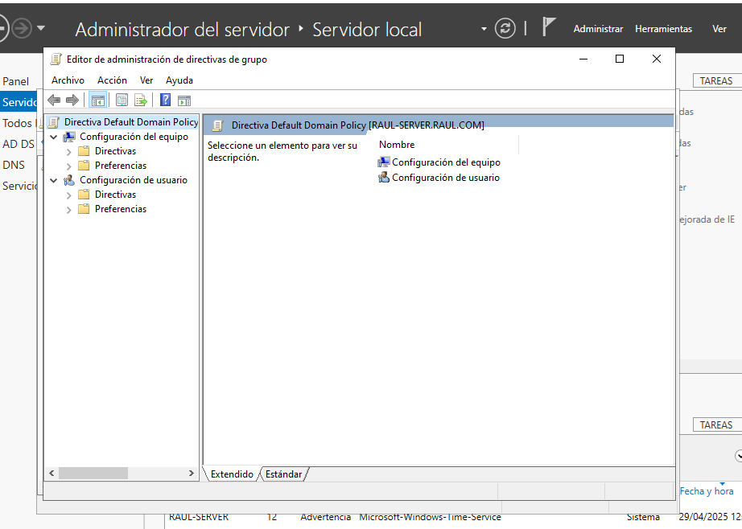
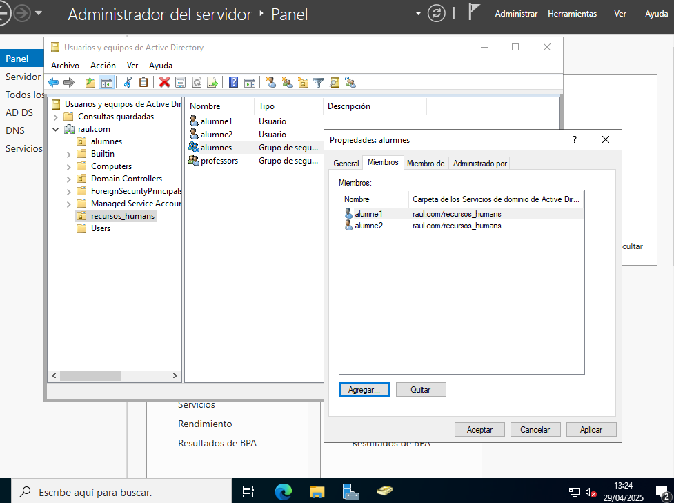
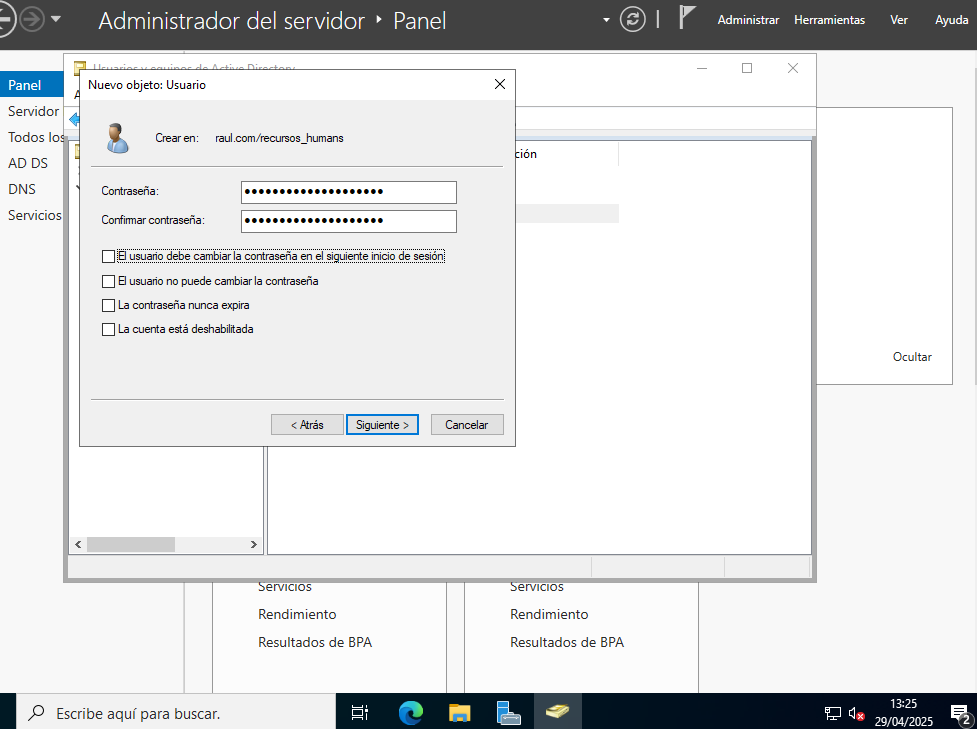
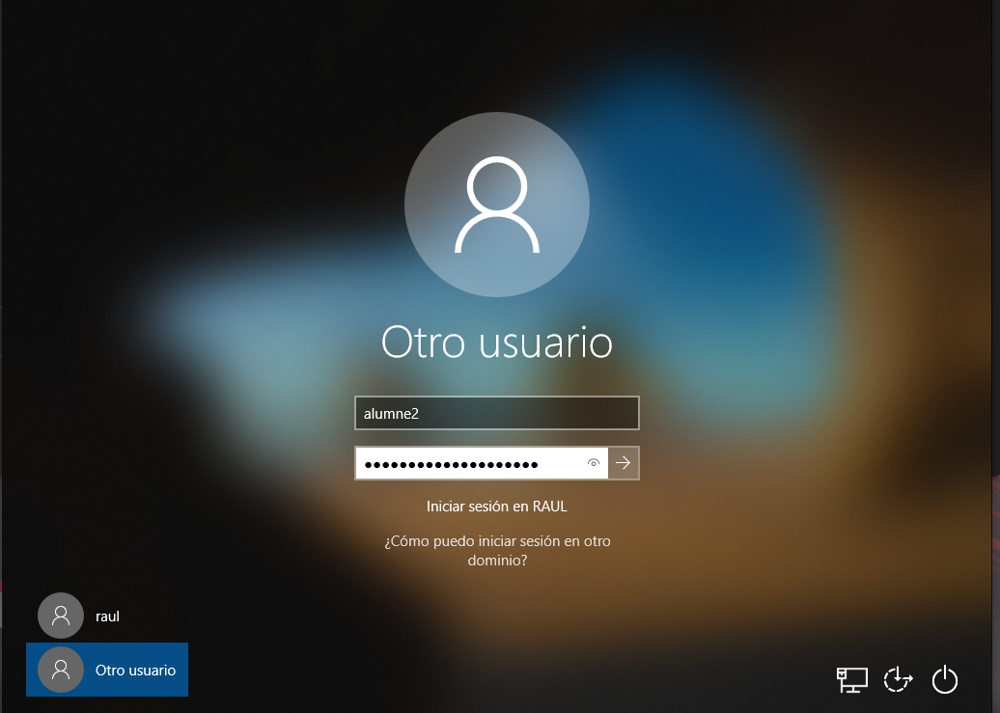
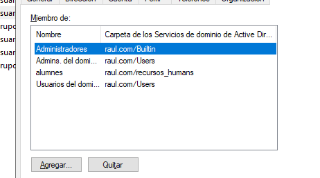
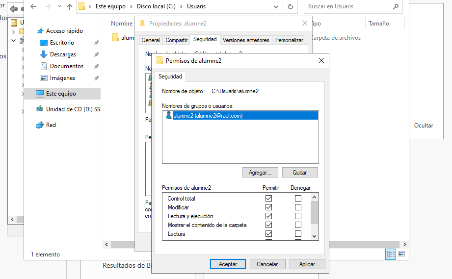
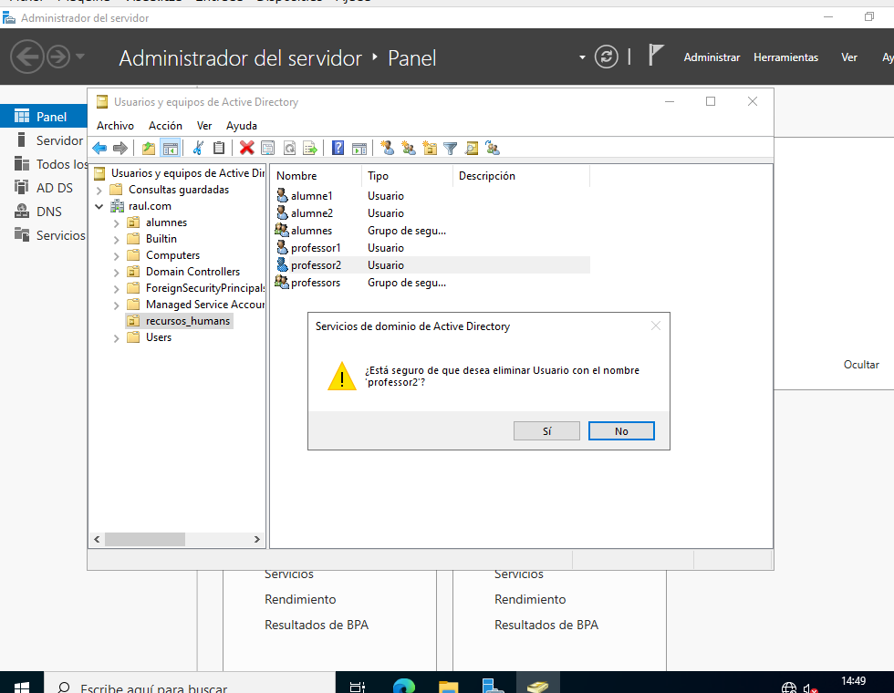
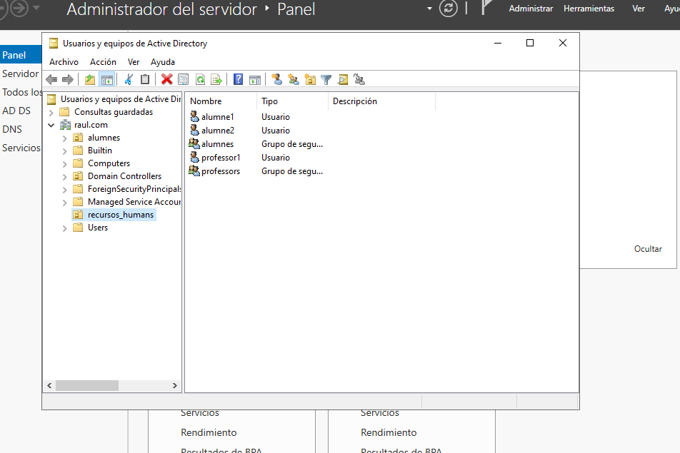
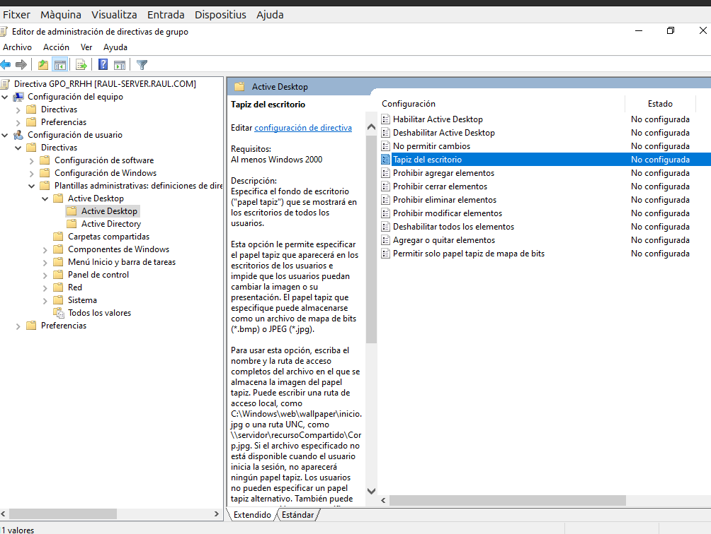

Gestió de Dominis i Accessos en Windows
Primer de tot, comencem aquest sprint amb la instal·lació de Windows Server 2022 amb interfície gràfica a partir de la ISO. Una vegada tenim la instal·lació, el que hem de fer és configurar perquè la IP sigui estàtica. Llavors, ens anem a VirtualBox, a Xarxa, i fiquem Xarxa NAT:
1. Instal·lació Domini AD
Una vegada iniciem la màquina virtual amb el servidor, ens preguntarà si volem que el nostre servidor pugui reconèixer altres dispositius de la xarxa. Li donem a Sí.
En aquest punt, comencem amb la instal·lació del Domini. Quan hem iniciat, ja ens surt l'Administrador del servidor, però en el cas que no surti, anem a l'Inici de Windows, el busquem i l'iniciem com a administrador.
1.1 Rols del servidor
Dins de l'Administrador del servidor, donem a Agregar roles y características, i li donem a Següent:

I en la següent finestra que ens surt, deixem l'opció per defecte, ja que estem fent la instal·lació de rols i característiques. Després, li donem a Següent:

De nou, en la nova finestra deixem els valors per defecte, ja que només ens sortirà l'opció del nostre servidor actual que tenim operatiu. I després fem Següent:
A la següent finestra, haurem de triar els serveis que volem instal·lar. Activarem la casella de Servicios de dominio de Active Directory.

Li donem a Agregar característica:

I comprovem que tenim marcada la casella de Servicios de dominio de Active Directory.

Una vegada tenim els rols seleccionats, donem a Següent i anem a l'apartat de Características.
1.2 Característiques
Comprovem que tenim instal·lada la característica de Administración de directivas de grupo, que ve per defecte, però en cas de no tenir-la, li donem per instal·lar-la. Seguidament, donem a Següent:

Ens sortirà una finestra informativa i llavors, després de llegir-la, li donem a Següent:
1.3 Confirmacions
En la finestra de confirmació, hem de donar clic a l'apartat de Reiniciar automáticamente el servidor en caso necesario, i seguidament ens sortirà un missatge informant que es pot reiniciar sense notificació. Llavors, només a Sí.

I podem veure el següent:

1.4 Finalitzar instal·lació
Finalment, li donem a instal·lar i podrem veure una barra amb el progrés i els resultats:
Seguidament, quan termini, ens sortirà una notificació i haurem de fer clic on fica Promover este servidor a controlador de dominio.

1.5 Configuració d'implementació
En aquest punt, hem de triar el tipus d’instal·lació d’Active Directory. En aquest cas, escollirem Agregar un nuevo bosque, ja que és el nostre primer servidor AD. Escribim el nom del domini, que li posarem el següent:

Passem a la següent finestra.
1.6 Opcions del controlador de domini
Deixem totes les opcions que ens surten, i al final introduirem una contrasenya segura per a la restauració dels serveis:

Quan donem a Següent, anirem a la finestra de Opcions de DNS. Passem aquesta finestra i en Opcions adicionals tampoc cal tocar res.
1.7 Revisar i Instal·lar
Ens anem directe a revisar les opcions que hem seleccionat i configurat anteriorment:
Finalment, en l'últim apartat es fa una avaluació de les opcions i, quan acabi, li donem a instal·lar:

Després de la instal·lació, es reiniciarà, i ja iniciarem amb el nom:

2. Unir equips al domini
Una vegada tenim tot a punt, unirem l'equip al domini.
2.1 Configuració Server
Llavors, el que hem de fer és, en el servidor, anar i desactivar el Firewall de totes les xarxes que surten, que en aquest punt ja em surten les 3. Desactivem el Firewall:

Mirem la IP del nostre Server per poder unir l'equip posteriorment. Hem de recordar la IP i l'enllaç.
En aquest cas:
- IPv4 -> 10.0.2.14
- Enllaç -> 10.0.2.1
Configurem la IP fixa anant a Panel de control, a Redes e Internet i, en la nostra connexió, anem a propietats. En IPv4, donem a Propiedades:
Introduïm els valors de IPv4, màscara i enllaç de la següent manera:

2.2 Configuració Client
Anem al Client, que en aquest cas serà un Windows 10, i igual que al Server, desactivem el Firewall de totes les xarxes, ja que evitem problemes per a aquests casos de prova:

Tornem a les nostres Connexions de Xarxa i, en les propietats del DNS, introduïm la IP que teníem del Servidor, que en aquest cas era 10.0.2.14.
2.3 Validar usuari
En aquest punt, anem al Servidor i podem veure que ens surt el nostre domini si anem a Herramientas i Usuarios y equipos de AD:

Creem una nova UO donant botó dret al domini raul.com. Aquesta UO tindrà el nom de alumnes:

Seguidament, donarem botó dret en la UO creada i donarem a crear un nou Usuari que ens servirà per poder validar-nos en el domini. Aquest nou usuari tindrà com a nom alumne1 amb la seva contrasenya.
Podem veure el resum de la creació de l'usuari:

Visualització de l'usuari creat a dins la UO:
Ara anem al Client i, en les propietats del sistema, anem a canviar el domini d'aquest equip (Panel de Control -> Sistema y seguridad -> Sistema).
Introduïm el domini que en aquest cas és raul.com i ens demanarà l'usuari que volem unir i la seva contrasenya. La introduïm:

Dades de l'usuari que volem unir:

Usuari unit correctament. Caldrà reiniciar el client, en cas que no es faci automàticament:

Si anem al Servidor, ja podem veure com el client raul-client està unit al domini:

En el moment en què el Client s'iniciï, entrarem amb l'usuari alumne1 amb les seves dades:

I ja s'iniciarà el seu sistema i, finalment, podem veure com alumne1 estarà dins del seu sistema que està en aquest domini al qual l'hem afegit:
3. Gestió del Domini AD
En aquest apartat ens dedicarem a gestionar el Domini de AD.
3.1 Crear una UO
Primer de tot, crearem una UO anomenada recursos_humans i dintre dos grups anomenats alumnes i professors.
Per crear la UO, donem clic dret en el nostre Domini i donem a crear-la. Seguidament, introduïm el nom que serà recursos_humans:
És moment de crear els dos grups. Ho fem donant clic dret a la UO i donant a l'opció de crear un grup. Els dos seran en àmbit de grup global.
Creació del grup alumnes:
Creació del grup professors:
3.2 Modificar les directives de la política de contrasenyes.
Ara, per modificar les directives de la política de contrasenyes, hem d'anar on fica Herramientas a dalt de tot i donem a Administración de directivas de grupo. Despleguem el nostre domini i fem clic dret al Default Domain Policy i donem a editar:
Donem a Editor de administración de directivas de grupo:

Despleguem Directivas fins que trobem Directiva de contraseñas. Una vegada estem dins, podem configurar les característiques de les contrasenyes. En aquest cas, fiquem que mínim ha de tenir 14 caràcters.
Sempre hem de fer un gpupdate per actualitzar les directives:
I si ara intentem crear un usuari amb una contrasenya que no compleixi les característiques, ens donarà un error com el que podem veure a continuació:

Podem veure que la configuració és correcta:
3.3 Crear dos usuaris dintre de cada grup
Creem en cada grup dos usuaris.
Per al grup alumnes, creem els usuaris alumne1 i alumne2:

Veient que complim amb les directives de les contrasenyes:

I per al grup professors, creem els usuaris professor1 i professor2:
3.4 Validar un equip client al domini
Primer de tot, si volem validar un client al domini, el que hem de fer és, en aquest mateix client, desactivar-li el Firewall per evitar problemes en aquest entorn de proves:
Canviem el nom del client per client-alumne2, guardem i reiniciem el client:
Comprovem la direcció IP del Server (IPv4 -> 10.0.2.16, Enllaç -> 10.0.2.1):
Anem a la nostra xarxa i canviem el DNS del client ficant de direcció la IP que tenim al Server per poder fer una connexió entre ells:
I llavors, en el nostre equip, canviem el domini pel del Server. El domini serà raul.com:
Ens demanarà les dades d'un usuari amb permisos per unir-se al domini. Les introduïm:
I obtenim el missatge de confirmació que s'ha pogut unir correctament al domini. Una vegada confirmem, el client es tornarà a reiniciar.
Una vegada s'ha reiniciat, iniciem sessió amb l'usuari del domini i veiem que ja ens deixa entrar sense cap problema:

Comprovació que estem dins de la seva sessió:

3.5 Fer que un usuari només es pugui connectar uns dies determinats
També podem fer que un usuari només es pugui connectar a la seva sessió uns dies o hores determinades. En aquest cas, farem que l'usuari alumne2 es pugui connectar només els dies Dimecres.
Per fer-ho, anirem al nostre usuari des de l'Active Directory i, fent doble clic, accedirem a les propietats. Entrem a Perfil i Hora de inicio de sesión. Una vegada estem dins, podem seleccionar qualsevol tram d'hores o dies als quals l'usuari es podrà connectar o no. El blau seran les hores que es pot connectar. (El dia de la prova és Dimarts, llavors no deixarà connectar-se).
Una vegada hem donat a acceptar i hem guardat els canvis, ens anem al client que encara no havíem tancat la sessió i podem comprovar que segueix oberta i sense cap problema. Això passa perquè quan la sessió s'acaba no es desconnecta de sobte, sinó que quan surt de la sessió ja no podrà tornar a entrar.
Mostra que simula quan està fora del temps però encara no tanquem la sessió:
Ara sí, tanquem sessió i tornem a entrar, però com era d'esperar, trobem l'error que ja ha passat el temps en el qual es pot connectar:
3.6 Fer que un usuari del domini pugui ser administrador d’un equip
Per fer que un usuari normal pugui ser administrador d'un equip local, el que s'ha de fer és anar a l'usuari al qual volem donar aquests permisos i donar-li dos clics. Seguidament, ens anem a la finestra Miembro de i li donem a Agregar.
Escollim el grup al qual volem que pertanyi i donem a acceptar:
Podem veure el resum del grup al qual pertany ara alumne2:

En aquest cas per fer les comprovacions desde el client, el que he fet a sigut tratar de accedir a la part on podem afegir un domini al nostre equip. Com cal permissos d'administrador ens demana que iniciem amb un usuari amb permissos.
Llavors introduïm els del alumne2:
Ens deixa accedir i podem veure a continuació que estem dints de l'usuari corresponent i en la finestra que calien permisos de administrador:
3.7 Carpetes dels usuaris que es connecten al domini
Quan un usuari es connecta al domini ha de tenir la seva carpeta amb els seus arxius (tot emmagatzemat al servidor, no localment) disponible d’una forma fàcil o inclús transparent per a ell.
Hi ha diverses formes de fer-ho, cadascuna amb les seves avantatges i inconvenients.
Una de les maneres que utilitzarem sera la de crear la carpeta de l’usuari al servidor i la compartim només per a l’usuari amb els permisos corresponents. Però hi ha més, com podria ser modificant la ruta de Documentos per a que apunti al Server.
Altres maneres te els inconvenients de que hi ha una dependencia manual, ja que si l'usuari canvia d'equip, aquesta configuració s'ha de repetir.
El primer de tot que harem sera crear una carpeta en la unitat del disc anomenada Usuaris i dints una de cada usuari com alumne2:
Anem a les propietats de la carpeta i en Compartir afegim l'usuari alumne2, ho fem amb permisos de lectura i escritura:
Quan acceptem ens retornara una direcció d'aqesta carpeta i ja estar compartida:
Ara en la carpeta anema a la finestra Seguridad i afegim a l'usuri amb permisos totals:

Després em d'anar als usuaris del AD i just en alumne2 donem doble clic i accedim a Perfil. Dints d'aqui fiquem la ruta de la carpeta compartida i acceptem:
I si accedim al Client podrem veure en la Red la carpeta que esta compartida desdes el Server:
Ara si creem una carpeta dints desde el client també la podrem veure al Server:
3.8 Delegar una UO a un usuari administrador
Per delegar una UO a un usuari administrador el que em de fer es donar clic dret a la UO de recursos_humans i donem a Todas las tareas
i Delegar control
S'obrira un assistent de delegació i en aquest cas marquem que pugi crear, eliminar i administrar comptes de usuari:
Donem a següent fins arribar al resum:
Ara tanquem sesió del Server que teniem amb l'usuari de RAUL i accedim amb l'usuari alumne2 que es al qual l'hi em delegat els permissos:
Intentem eliminar un usruari i veiem com podem fer-lo sense problema:

I finalment em pogut eliminar a l'usuari professor2:
4. GPOs
Les GPOs (Group Policy Objects) de Windows són eines que permeten controlar la configuració d'usuaris i equips en una xarxa. S'utilitzen per aplicar polítiques de seguretat, configurar l'entorn i gestionar permisos de forma centralitzada.
A continuació afegirem diferents directives a una UO.
Per poder crear una GPO en una UO el primer que hem de fer es anar a "Herramientas" -> "Usuarios y equipos de Active Directory" i anar a una UO que tinguem creada. En aquest cas tenim la UO* utlitzada en apartats anteriors anomenada recursos_humans.

Un aspecte molt important es tenir en compte que dints de la carpeta de la nostra UO em de tenir algun equip que tinguem validat. Aquest equips estan en la carpeta Computers, llavors agafem el equip validat que en aquest cas es el de alumne2 i el fiquem dints de la carpeta de la UO. Sortira una adevertencia i li diem que si.
Equip dins de la UO:
Creació de una GPO
Per poder crear una GPO anirem sobre la UO recuros_humans i donarem clic dret i donarem a Crear un GPO en este dominio y vincularlo aquí....
Ens sortira una finestra i hem de ficar el nom de la GPO, i un altre apartar per ficar una GPO d'inici si es que tenim una creada per a que els usuaris tinguim unes directives establertes en el seu inici.
Finestra de la creació:
Si mirem dints de la GPO donant clic, abaix podrem veure quines configuracións tenim tant per al equipo com per a l'usuari. En aquest punt encara no tenim res:
Per poder afegi configuracións donarem clic dret sobre la GPO* donem a editar.
Afegir directives Usuari
(Per comprovar al cliente, em de fer gpupdate en el Server i tancar sesió i entrar en el Client per poder veure els canvis)
Restringir Panell de Control i Ficar Fondo
Per donar una restrinció al panell de control anirem a Directives -> Plantillas Admin... -> Panel de Control -> Prohibir el acceso...:
Donem doble clic i en la finestra que surt l'hi donem a habilitar, Aplicar i Aceptar:

Aprofitarem en aquest apartat i també afegirem un fons de pantalla per a l'usuari. Anem a Directives -> Plantillas Admin... -> Active Desktop -> Active Desktop -> Tapiz..:

Una vegada em entrat, el que em de tenir es una imatge descarregada en .jpg. La ficarem en la unitat C: en una carpeta fondo i aquesta carpeta la compartirem amb l'alumne2:
Una vegada compartida, en les propietats de aquesta carperta on em guardat la imatge, copiem la direcció d'acces de xarxa:
Aquesta direcció la copiarem en la directiva del fons de pantalla i l'aplicarem:
Si anemn a Administración de directivas de grupo i donem sobre la GPO creada podrem veure aquestes directives que em afegit:
Ara per poderles veure en el Client, anirem al terminal del Server i farem un gpupdate per actulitzar les directives:
I en aquest moment tancarem la sessió del client i tornarem a entrar, i s'hauria de veure els canvis fets.
Probem de entrar en Panel de control i ens retorna un error de que no podem accedir, llavors s'han aplicat correctament. I si ens fixem en el fons s'ha canviar per el que haviem possat que era una imatge negra per aixó que es veu aixi:
Ocultar apps anclades en la barra de tasques i bloquejar l'accés a Microsoft Store
Primer de tot per ocultar apps anclades en la barra de tasques anirem a la directica que es troba en Configuración de usuario > Plantillas administrativas > Menú Inicio y barra de tareas i es diu Quitar programas anclados de la barra de tareas i habilitem:
I Per bloquejar l'accés a Microsoft Strore anirem a Configuración de usuario > Plantillas administrativas > Componentes de Windows > Tienda i Desactivar la aplicación Store i habilitem:
Fem gpupdate al CmD i comporvem al client. Com podem veure a continuació no podem accedir a la Store, ens surt un error. I també a la barra de tasques veiem que ja no tenim cap aplicació anclada:
Mostrar un missatge de benvinguda en iniciar sessió
Per configurar aquest missatge anirem a Configuración del usuario > Configuración de Windows > Scripts > Inciar sesión. Seguidament anirem a crear un archiu anomenat welcome.bat on es trobara aquest script de benvolguda.
Script:
@echo off
echo.
echo ============================================
echo WELCOME %USERNAME%
echo ============================================
pause
Em de moure el fitxer a una carpeta que em de compartir a l'usuari per a que funcioni.
Ara en la directiva l'hi donarem a afegir un fitxer que sera l'anterior:
L'hi donem a aplicar i acceptar. Aquest script mostrarà un missatge en una finestra de consola (CMD) i després s'aturarà amb pause perquè l'usuari el pugui llegir.
Mirem els resultats al client després de fer un gpupdate al Server.
Al inicar ens sortira aquesta finestra:
Bloquejar l'accés a www.facebook.com
El que fareme sera rediriir www.facebook.com a 127.0.0.1, impedint que el navegador trobi la pàgina.
Per fero primer creem un Script amb el següent:
echo 127.0.0.1 www.facebook.com >> C:\Windows\System32\drivers\etc\hosts
echo 127.0.0.1 facebook.com >> C:\Windows\System32\drivers\etc\hosts

Després en GPOs anem a Configuración de Windows > Scripts (inicio de sesion) i agregem aquest script:
Actulitzem directives i anem al cliente a veure el resultat:
Afegir directrius d'equip
Les directrius d'equip són configuracions administratives que permeten controlar el comportament del sistema operatiu i els seus components. S'apliquen a nivell de dispositiu i afecten tots els usuaris de l'equip.
Treure el permís de Cortana
En aquest apartat desactivarem els permisos per poder accedir a Cortana a nivell d’equip. Per fer-ho, anem a la següent ruta dins de les directrius al servidor:
Plantilles administratives -> Components de Windows -> Cercar -> Permetre l'ús de Cortana
La desactivem a la finestra següent. Això vol dir que ja no podrem accedir-hi.
Després, al mateix servidor, actualitzem les GPO amb gpupdate:

Com podem veure, ja no surt Cortana a baix. Llavors, per assegurar-nos-en, podem anar a l’Editor del Registre i accedirem a la següent ubicació:
HKEY_LOCAL_MACHINE -> SOFTWARE -> Policies -> Microsoft -> Windows -> Windows Search
Veurem el valor de AllowCortana, que és 0; llavors vol dir que està deshabilitada. Si fos 1, estaria habilitada. D’aquesta manera ens assegurem.
Desactivar l'aplicació de Store
Ara, el que farem serà deshabilitar la Store de Windows, però a nivell d'equip. Llavors, per fer-ho, anirem com abans a les directrius dels equips i accedirem a la següent ruta:
Configuració de l’equip -> Plantilles administratives -> Components de Windows -> Botiga
I en aquest apartat farem clic a Desactivar l'aplicació de Store.
A la finestra que ens apareix, marquem Habilitada per tal que es desactivin els permisos d'accés. Cliquem a Aplicar i Acceptar:
Com abans, executarem la comanda gpupdate per actualitzar les directrius als clients. Si no, no veurem els resultats:
Un cop fet això, anirem al client i tancarem la sessió per tornar-hi a entrar. D’aquesta manera, s’actualitzaran les directrius al client en què estem treballant. Llavors intentem entrar a la Store de Windows, i veurem que no ens deixa accedir-hi perquè està bloquejada.